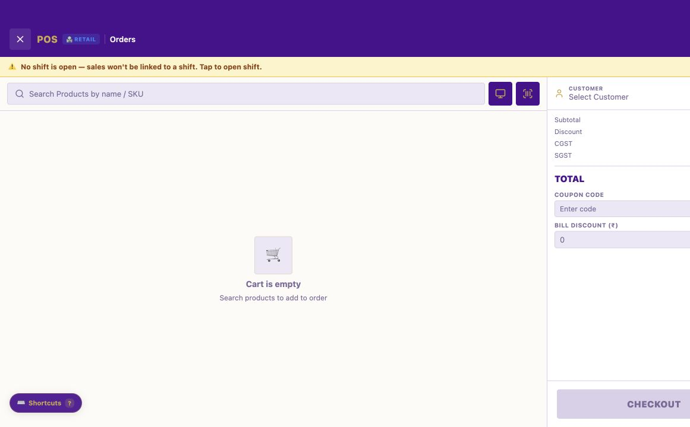
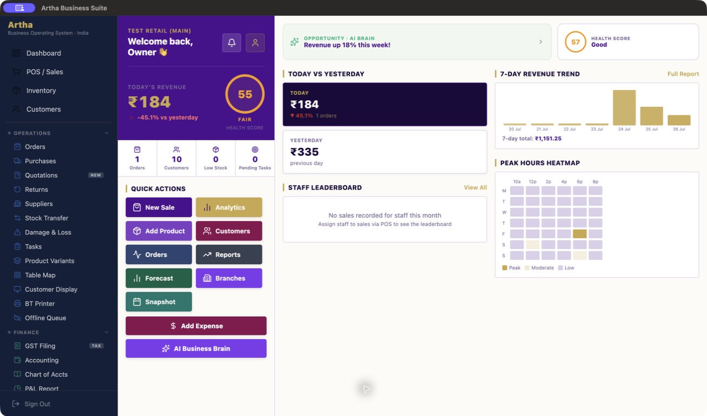
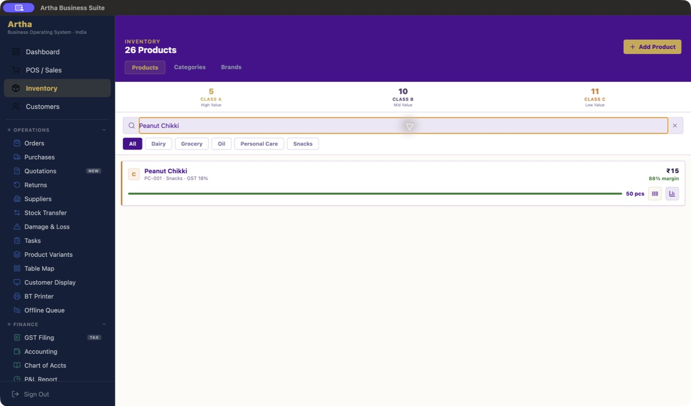
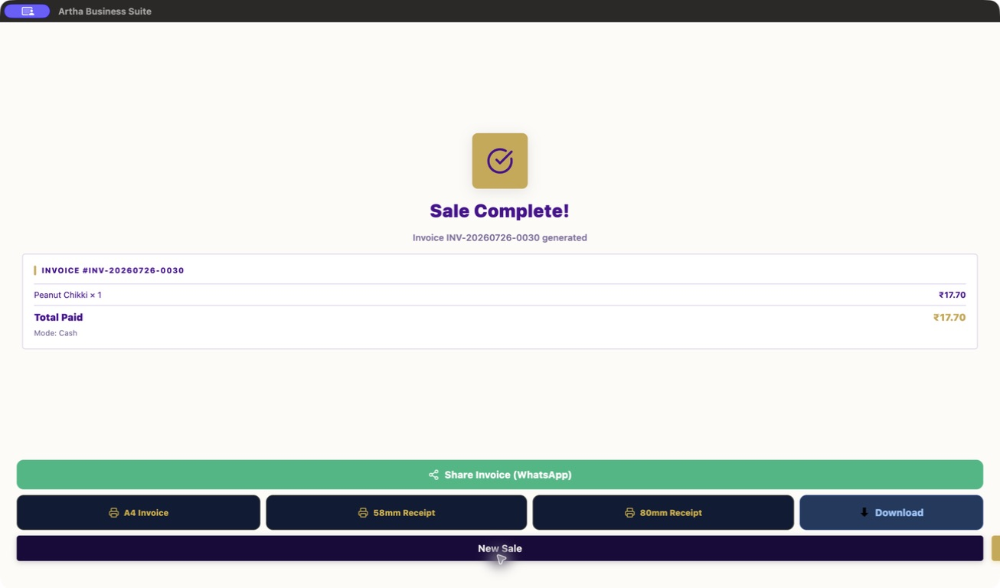

Artha Business Suite v1.0.9 · current release
The operating system
for ambitious businesses.
Artha connects selling, stock, purchasing, finance, customers, teams and commerce into one adaptive business operating suite—designed for the work that happens between the counter and the command centre.
31business experiences
4delivery surfaces
8integration functions
CONNECTED OPERATIONSSell → Stock → Account → Serve → Grow
A visible product foundation
Depth you can inspect.
Scope you can understand.
The current Artha source and release record show a substantial, multi-surface operating platform—while keeping live-provider, hardware and statutory gates honest.
The Artha platform
One operating picture.
Built around real work.
Artha is designed as a connected product foundation: transaction and inventory activity can inform finance, customer service, reports and merchant operations without treating each module as a separate application.
POS & sales
Billing, returns, receipts, shifts, payments, barcode-oriented selling and transaction operations.
Inventory
Products, variants, suppliers, purchases, branch-aware stock foundations, movements, labels and reorder workflows.
Accounting
Ledgers, receivables, payables, cash-flow and reporting workflows with GST-preparation architecture.
Customers
CRM, loyalty, customer records, segmentation, reviews, referrals and lifecycle-oriented operations.
People & control
Roles, attendance, shifts, HR operations, task flows, notifications and audit-oriented records.
Insight & automation
Dashboards, reports, health signals, automation foundations and tenant-bound AI-assistance architecture.

Business-type experience engine
Not one generic screen for every business.
Artha’s configurable Business Type Engine shapes terminology, navigation, KPIs, quick actions, forms, workflows, reports, onboarding and commerce modes around the selected business experience.
- 31 configured industry definitionsBuilt on reusable retail, fashion, food-service, wholesale, service, appointment, serialized, batch and production archetypes.
- Shared operating foundationSecurity, staff, accounting, transaction and tenant controls remain shared while the experience adapts.
- Focused vertical directionRetail, boutique/fashion, restaurant, service and wholesale patterns are represented in the certified product source.
Multi-business & branch control
Clear ownership.
Precise location control.
One person can operate more than one business in Artha without blending their commercial records. Within a business, branches can share the catalogue while each physical location is governed through its own stock context.
Business type changes the experience for that business. It does not create a second business or merge data across businesses.
Business identity
Separate businesses maintain separate products, customers, financial records, memberships and working context.
Business type
Terminology, flows and industry guidance adapt without turning an existing business into a different tenant.
Branch operations
Branches provide physical-location control with a main-branch rule, stock-transfer workflow and protected retirement checks.
Merchant commerce
From merchant operations
to a customer storefront.
The commerce architecture connects merchant configuration, catalogue visibility, customer cart, server-authoritative checkout, order tracking and fulfilment-oriented lifecycle controls.
Manage storefront identity, publishing, public product selection and order operations from the authenticated application.
Public catalogue, mobile-first storefront, cart, checkout and order tracking are separate from the merchant’s private operating surface.
Checkout is designed to re-read price and tax, apply idempotency and reserve the shared product or variant stock model.
Payment integration boundaries use server-side configuration. Live provider activation and reconciliation acceptance remain separate gates.
Trust by design
Architecture that a serious operator can inspect.
Business, branch and role context is represented in application and data-access controls. Full live multi-business acceptance remains a documented release gate.
Supabase Postgres, RLS, RPCs and Edge Functions form the protected data and integration boundary for commerce, payments, GST-provider and AI paths.
React Native/Expo Router powers the application surface; web export and Electron desktop delivery are retained alongside Android project source.
Source, checks, release manifests and known external gates are documented rather than hidden behind a blanket production claim.
Workflow evidence
Trace the work.
Not just the screens.
These captured product states use isolated synthetic demonstration data and show how selected workflows connect across sales, inventory, purchasing, returns and storefront operations.

Transaction activity reflected in the operating view.
Inventory proof in the working product view.
Receipt workflow increasing available stock.

Return workflow restoring product stock.
Order path reflecting stock deduction.

Operational print and receipt formats.
Artha v1.0.9 release
Built for real business operations.
Clear about its release work.
Artha v1.0.9 strengthens the product through documented test, package and architecture work while keeping external-provider and platform-release activities clear.
Source & product evidence
Structured source, architecture, security, automated contract and release material supports the continued evolution of Artha.
Web & desktop paths
Web export and desktop packaging paths are part of the release workflow. Platform-specific signing and clean-device acceptance are distinct gates.
Payments, GST & hardware
Provider credentials, live callbacks, official GST-provider acceptance and physical scan-back proof require external authority and evidence.
Release disclosure
Package availability or source features do not by themselves prove public-release certification, live payment success, official GST filing, notarization, code signing or complete end-to-end business acceptance.
Read v1.0.9 release notes →Controlled package library
Artha v1.0.9,
built for operating review.
Each current package is provided with its actual delivery status. Verify the published checksums before distribution and complete the listed platform gate before a public rollout.
Desktop package
Current Apple Silicon desktop package. Developer ID signing, notarization and clean-device acceptance remain controlled release gates.
Review delivery status →Desktop installer
Current Windows x64 installer. Authenticode signing and clean-device runtime acceptance remain controlled release gates.
Review delivery status →Mobile package
Self-contained Android evaluation build, debug-signed for internal installation testing. It is not a production-signed or store-distribution release.
Review delivery status →Consumer web application
Static web export with a customer storefront entry at /store?slug=merchant-store. Host it on HTTPS before sharing a merchant’s consumer URL.
The controlled v1.0.9 package record, checksums and platform-gate status are maintained with the release. Read the delivery status.
Product tours
See the connected
operating day.
Recordings use isolated synthetic demonstration data. They demonstrate product areas, not commercial performance or every platform’s acceptance status.
PRODUCT TOUR 01
Command & finance
Dashboard, daily snapshot, accounting, GST preparation and reporting.
PRODUCT TOUR 02
Sell, stock & print
Point of sale, inventory, purchasing, returns and label/receipt workflows.
PRODUCT TOUR 03
Customers & commerce
CRM, customer operations, merchant commerce and people workflows.
PRODUCT TOUR 04
Command centre
A concise walkthrough of Artha’s operating dashboard and finance-aware business view.
PRODUCT TOUR 05
Sales to stock
See the working connection between selling, stock visibility and operational control.
PRODUCT TOUR 06
Customer growth
A product tour of customer context, relationship operations and commerce direction.
The Artha foundation
One connected platform, built to grow with the business.
Artha brings product operations, finance workflows, customer engagement, ecommerce and reporting together in a configurable platform that can evolve with every business it serves.
Explore the platform